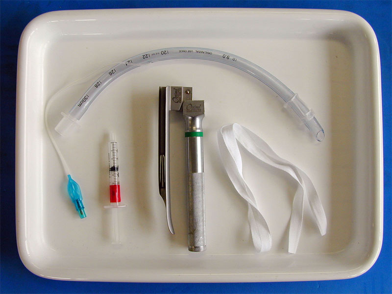

Equipment

laryngoscope
Make sure that you have a laryngoscope with a suitable sized blade for your animal.
Open the blade and make sure that the light comes on brightly. If it is dim, the batteries probably need replacing; if it does not come on at all, check that the bulb is screwed in tightly.
endotracheal tube
Make sure that you have a suitable sized tube. A large dog will require a 9 or 10mm tube, a sheep will need a 7 or 8mm tube. You will also need a stylett to straighten the tube for sheep.
Blow the cuff up with the cuff inflating syringe and squeeze it gently to check for leaks.
tube tie
Make sure that you have a piece of tape for tying the tube in. This is tied tightly to the tube just below the connector, then loosely over the nose behind the canine teeth in dogs, or over the mandible behind the incisors in sheep. A piece of tie to hold the sheep's maxilla and a swab to hold its tongue are also useful.
cuff inflating syringe
This is just an old syringe of a suitable size for the animal and tube. After the tube is placed and tied in, a little air is put into the cuff. The animal is connected to the breathing circuit and the bag squeezed whilst watching the chest for inflation. If there is a hiss of escaping gas from around the tube, a bit more air is put in. This is repeated until there is just enough air in the cuff to form an airtight seal. Too much air in the cuff will cause pressure damage to the tracheal mucosa.